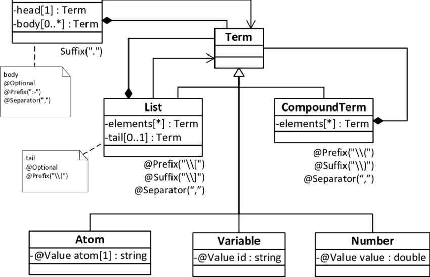

Para comenzar a programar en Prolog debemos conocer las expresiones a utilizar con respecto a nuestro motivo:
• Variables: deben empezar con letra mayúsucula o el símbolo '_'. Ej: Objeto2,_x23.
• Operadores tenemos operadodes artiméticos y relacionales como: SUMA, RESTA, Sqrt(X), log(X),etc.
• Predicados: son la relación directa con una expresión y deben ser declarados,
basado en la declaración de los tipos de dominos para cada uno de los nombres de los objetos. Ej: mercado(encargado, vendedor).
• Estructuras: los objetos estructurados son aquellos que tienen varios componentes
que a la vez pueden ser sus propias estructuras. Ej: fecha(1, enero, 1975).
• Consultas: para plantear una consulta en prolog debe probar que esta es verdadera. Ejemplo:
paciente("ana", femenino).
YES • Comentarios: los comentarios que son de más de una línea se hacen de la siguiente manera /*comentario*/, sino se puede utilizar el símbolo de porcentaje %.
• Clausulas y relaciones: cada relación es definida por una o más cláusulas. Ejemplo:
Dado a y b, determinar cuando R(a,b) es verdadero. Dado b, encontrar todos los X/R(x,b) es verdadero.
Un programa de prolog se ejecuta cuando el usuario introduce una pregunta un conjunto de términos que deben ser todos ciertos. Los hechos y las reglas de la base de datos se usan para determinar cuáles sustituciones de variables de la pregunta son congruentes como la información de la base de datos. Como intérprete, Prolog solicita entradas al usuario donde él digita una pregunta o nombre de una función, a lo que el programa imprime 'Yes' si es verdad o 'No' si es falso. Es por su funcionamiento que Prolog se reconoce como parte del paradigma de los lenguajes lógicos y declarativos.
paciente("ana", femenino).
YES • Comentarios: los comentarios que son de más de una línea se hacen de la siguiente manera /*comentario*/, sino se puede utilizar el símbolo de porcentaje %.
• Clausulas y relaciones: cada relación es definida por una o más cláusulas. Ejemplo:
Dado a y b, determinar cuando R(a,b) es verdadero. Dado b, encontrar todos los X/R(x,b) es verdadero.
Un programa de prolog se ejecuta cuando el usuario introduce una pregunta un conjunto de términos que deben ser todos ciertos. Los hechos y las reglas de la base de datos se usan para determinar cuáles sustituciones de variables de la pregunta son congruentes como la información de la base de datos. Como intérprete, Prolog solicita entradas al usuario donde él digita una pregunta o nombre de una función, a lo que el programa imprime 'Yes' si es verdad o 'No' si es falso. Es por su funcionamiento que Prolog se reconoce como parte del paradigma de los lenguajes lógicos y declarativos.
